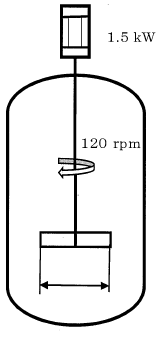

平成27年度 問33 化学プロセス
撹拌動力Pは無次元動力数Npを用いP＝Np（ρn3D5）と表される。ある撹拌槽において1.5 kWのモーター付きで、120 rpmまで回転数を上げることができる撹拌機が付いている。この撹拌機の動力を0.75 kWに替えた場合、回転数の上限に最も近い値はどれか。
ただし、Nは一定とし、21/3は1.26とする。
なお、ρ：液密度［kg m-3］、n：回転数［s-1］、D：羽径［m］である。

①
95 rpm
②
00 rpm
③
05 rpm
④
10 rpm
⑤
15 rpm
正答
① 95 rpm
同程度の撹拌能力を得るために無次元動力数を合わせてスケールアップさせます。
まず1.5 kWの場合に対して、無次元動力数の式に代入します。流体と撹拌槽が同じなため、ρとDは固定値になります。計算しやすいようρD5をaと置きます。また回転数120 rpmは1分当たりの回転数なので1秒当たりの回転数120/60＝2 s-1に変換します。
Np＝1.5 / 23a
a＝0.1875/Np
0.75 kWの場合に対して、無次元動力数の式に代入します。ここでNpは約分されます。
Np＝0.75 / (0.1875/Np)n3
n3＝4
n＝(22)1/3
n＝(21/3)2
n＝1.262
n＝1.59
求める回転数の単位はrpmですので、1.59×60＝95.4 rpmとなります。最も近い値は95 rpmです。